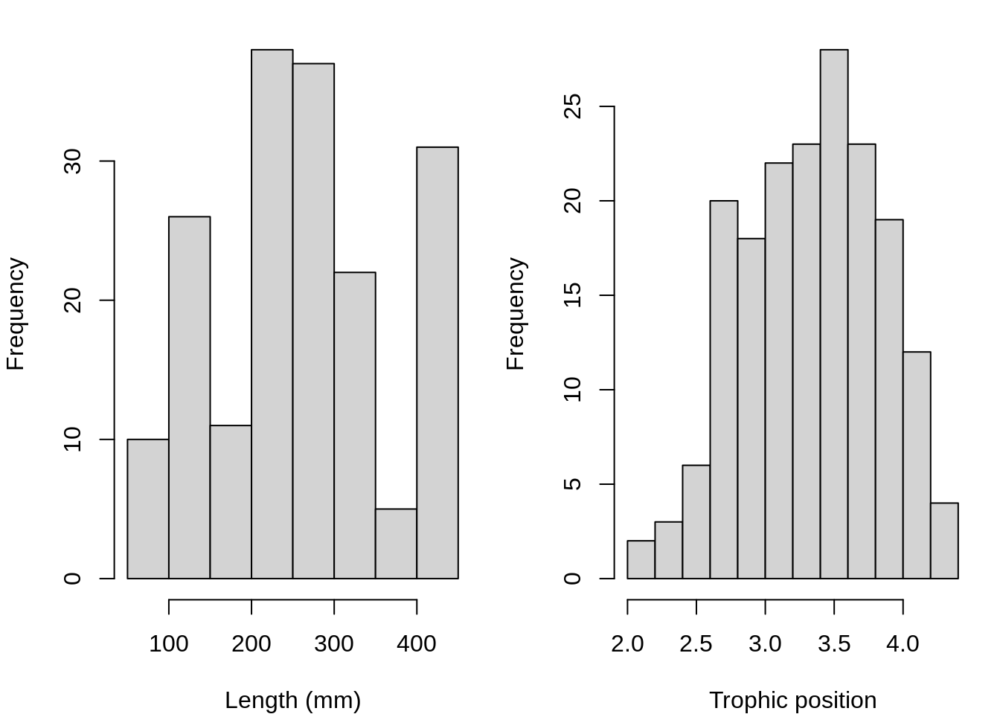
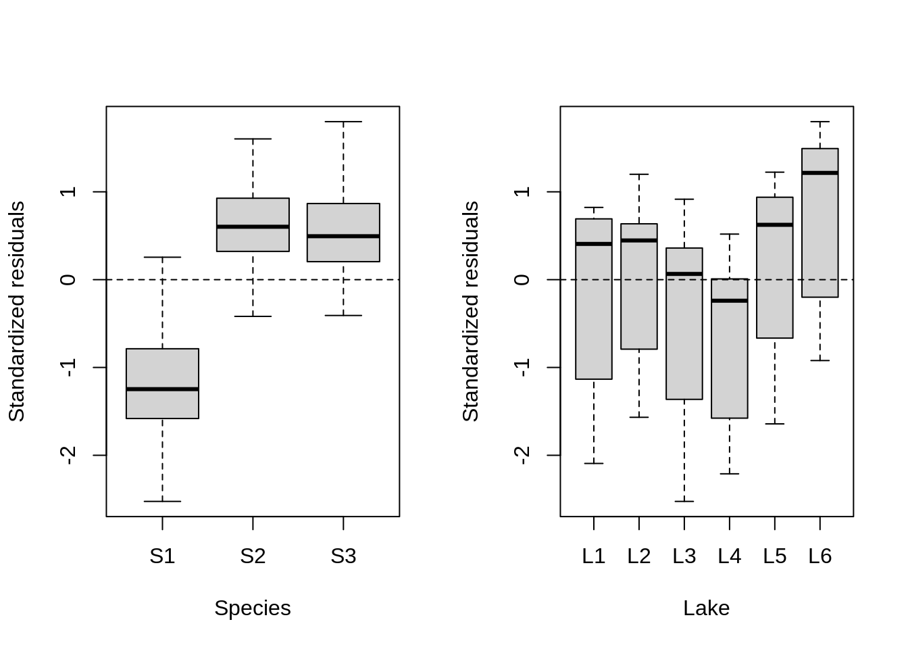
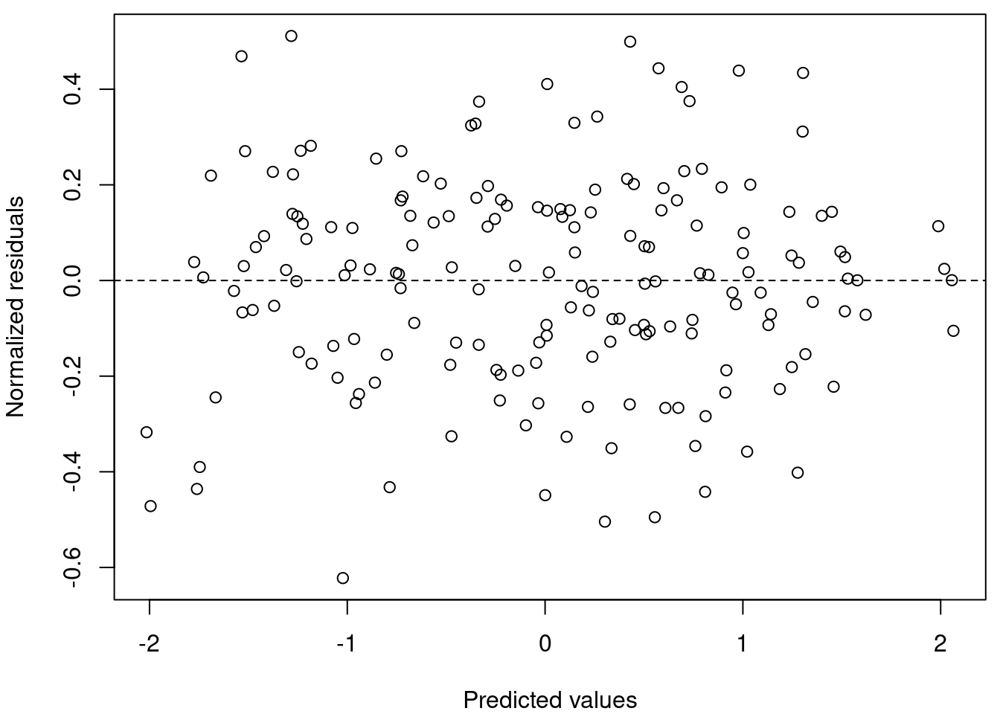
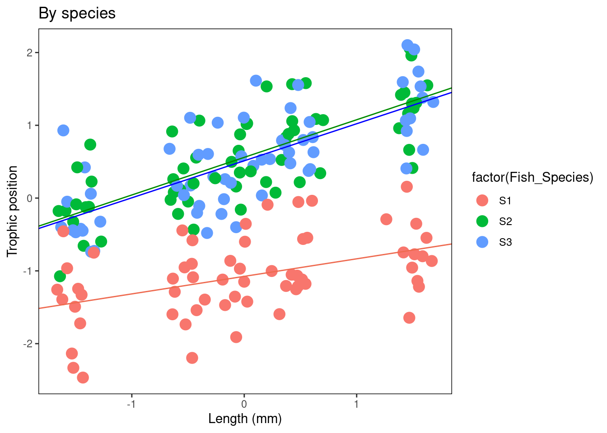

Chapter 8 Mixed model protocol
- Step 1. A priori model building and data exploration
- Step 2. Code potential models and model selection
- Step 3. Model validation
- Step 4. Model interpretation and visualization
Step 1. A priori model building
What we know a priori:
We want to determine if the trophic position can be predicted by body length, while taking into account the variation between species and lakes. So we want a model that looks like this:
\[PT_{ijk} \sim Length_i + Lake_j + Species_k + \epsilon_{ijk}\]
Check data structure
Does the data have the right structure?
Look at the data structure:
## 'data.frame': 180 obs. of 4 variables:
## $ Lake : chr "L1" "L1" "L1" "L1" ...
## $ Fish_Species: chr "S1" "S1" "S1" "S1" ...
## $ Fish_Length : num 105 195 294 414 237 ...
## $ Trophic_Pos : num 2.6 2.7 2.74 2.74 2.79 ...Now look at the distribution of samples for each factor:
## Fish_Species
## Lake S1 S2 S3
## L1 10 10 10
## L2 10 10 10
## L3 10 10 10
## L4 10 10 10
## L5 10 10 10
## L6 10 10 10This dataset is perfectly balanced, but mixed models can be used to analyze unbalanced experimental plans, as it is often the case in ecology!
Let’s also look at the distribution of continuous variables:
# Look at the distribution of continuous variables:
par(mfrow = c(1, 2), mar = c(4, 4, 1, 1))
hist(fish.data$Fish_Length, xlab = "Length (mm)", main = "")
hist(fish.data$Trophic_Pos, xlab = "Trophic position", main = "")
Major deviations could cause heteroscedasticity problems. If necessary, make transformations. In this case, the data seems OK.
Check collinearity
Check for collinearity between your explanatory variables
The problem with collinear predictors is simply that they explain the same thing, so their effect on the response variable will be confounded in the model.
In this example, there is no risk of collinearity with only one continuous variable. If you had another continuous variable (var2), one simple way to check for collinearity is cor(var1, var2)
Here an example of collinearity.
Challenge 3
This is a thinking problem!
Given our data, What additional measures could we have taken in the field that could have been strongly correlated with body length?
Challenge 3 Solution:
There are multiple potential answers here.
One example is fish body mass - this variable is strongly correlated with fish length. Therefore, we do not want to include these two variables in the same model.
Consider scale
Consider the scale of your data
If two variables in the same model have very different scales, the mixed model will likely return a convergence error when trying to compute the parameters.
The Z-correction standardizes the variables and solve this problem (use function scale() in R):
\[z = \frac{x-mean(x)}{standard.deviation(x)}\] Consider the scale of the variables within our dataset:
Body length -> Long scale Trophic position -> Short scale
Because our data have very different scales of variation, we apply the Z-correction
# Standardized length, 'by hand'
fish.data$Z_Length <- (fish.data$Fish_Length - mean(fish.data$Fish_Length))/sd(fish.data$Fish_Length)
# Standardized trophic position, with the function scale
fish.data$Z_TP <- scale(fish.data$Trophic_Pos)Do you need a LMM?
Determine if you need a mixed model
To find out if a mixed model is needed for your data, you need to determine whether it is important to consider the random effects that might influence the relationship you are interested in (in our case, lake and species).
We can do this by:
- Creating a linear model without random effect
- Calculating the residuals of this linear model
- Plot the residuals against the levels of the potential random factors
Create a linear model without random effects
Calculate residuals of this linear model
Plot the residuals against the levels of the potential random factors
par(mfrow = c(1, 2))
plot(lm.test.resid ~ as.factor(fish.data$Fish_Species), xlab = "Species",
ylab = "Standardized residuals")
abline(0, 0, lty = 2)
plot(lm.test.resid ~ as.factor(fish.data$Lake), xlab = "Lake",
ylab = "Standardized residuals")
abline(0, 0, lty = 2)
These results suggest that there is residual variance that could be explained by these factors, so they should be included in a mixed effect model!
Step 2. Code potential models and model selection
Translate this model…
\[PT_{ijk} \sim Length_i + Lake_j + Species_k + \epsilon_{ijk}\]
… into R code
## Linear mixed model fit by REML ['lmerMod']
## Formula: Z_TP ~ Z_Length + (1 | Lake) + (1 | Fish_Species)
## Data: fish.data
## REML criterion at convergence: 72.4662
## Random effects:
## Groups Name Std.Dev.
## Lake (Intercept) 0.4516
## Fish_Species (Intercept) 0.9301
## Residual 0.2605
## Number of obs: 180, groups: Lake, 6; Fish_Species, 3
## Fixed Effects:
## (Intercept) Z_Length
## 9.752e-14 4.198e-01Where:
lmer-> “linear mixed model” function fromlme4package(1 | Lake)-> indicate varying intercepts among lakesREML = TRUE-> estimation method
Estimation methods
REML (Restricted Maximum Likelihood) is the default method in lmer (see ?lmer).
The Maximum Likelihood (ML) method underestimate model variances by a factor of \((n-k)/n\), where \(k\) is the number of fixed effects. The REML method corrects for this bias.
REML estimates can be used when comparing models with the same fixed effects (i.e. nested models). However, if you are comparing models where the fixed effects differ among models then maximum likelihood should be used to fit parameters as this method is not dependent on the coefficients of the fixed effects. Fitting using maximum likelihood is done by setting REML=FALSE in the lmer command.
See this article for more information on the difference between ML and REML.
In summary:
REML to compare models with nested random effects and the same fixed effect structure
ML to compare models with nested fixed effects and the same random effect structure
ML to compare models with and without random effects
Different model structures
What if we want the slopes to vary?

Let’s look at different model structures:
(1 | Lake)random effect by lake at the intrecept(1 + Z_Length | Lake)random effect by lake at the intercept and slope in response to the body length (NB: (Z_Length | Lake)gives the same random structure)(-1 + Z_Length | Lake)to have only the random effect at the slope(1 | Lake) + (1 | Species)for crossed random effects(1 | Lake:Fish_Species)for the interaction between 2 random effectsIf your dataset includes nested random effects, you could use
/to specify them, e.g.(1 | factor1 / factor2)iffactor2is nested infactor1(see)
Challenge 4
Re-write the following code so that the slopes of the relationship between trophic position and body length vary by lake and species:
# Challenge 4: Can you re-write this code so that the slopes
# between trophic position and body length vary by lake and
# species?
lmer(Z_TP ~ Z_Length + (1 | Lake) + (1 | Fish_Species), data = fish.data,
REML = TRUE)## Linear mixed model fit by REML ['lmerMod']
## Formula: Z_TP ~ Z_Length + (1 | Lake) + (1 | Fish_Species)
## Data: fish.data
## REML criterion at convergence: 72.4662
## Random effects:
## Groups Name Std.Dev.
## Lake (Intercept) 0.4516
## Fish_Species (Intercept) 0.9301
## Residual 0.2605
## Number of obs: 180, groups: Lake, 6; Fish_Species, 3
## Fixed Effects:
## (Intercept) Z_Length
## 9.752e-14 4.198e-01Challenge 4 Solution:
# Challenge 4 solution:
lmer(Z_TP ~ Z_Length + (1 + Z_Length | Lake) + (1 + Z_Length |
Fish_Species), data = fish.data, REML = TRUE)## boundary (singular) fit: see ?isSingular## Linear mixed model fit by REML ['lmerMod']
## Formula:
## Z_TP ~ Z_Length + (1 + Z_Length | Lake) + (1 + Z_Length | Fish_Species)
## Data: fish.data
## REML criterion at convergence: 20.5786
## Random effects:
## Groups Name Std.Dev. Corr
## Lake (Intercept) 0.45279
## Z_Length 0.02378 -0.82
## Fish_Species (Intercept) 0.93103
## Z_Length 0.15728 1.00
## Residual 0.22341
## Number of obs: 180, groups: Lake, 6; Fish_Species, 3
## Fixed Effects:
## (Intercept) Z_Length
## -0.0009025 0.4223738
## optimizer (nloptwrap) convergence code: 0 (OK) ; 0 optimizer warnings; 1 lme4 warningsChallenge 5
To determine if you have built the best mixed model based on your prior knowledge, you should compare this a priori model to other alternative models.
With the dataset you are working on, there are several alternative models that might better fit your data. For challenge 5, make a list of 7 alternative models that could be compared to this one:
# Challenge 5: Make a list of 7 alternative models that could
# be compared to this initial model:
lmer(Z_TP ~ Z_Length + (1 | Lake) + (1 | Fish_Species), data = fish.data,
REML = TRUE)## Linear mixed model fit by REML ['lmerMod']
## Formula: Z_TP ~ Z_Length + (1 | Lake) + (1 | Fish_Species)
## Data: fish.data
## REML criterion at convergence: 72.4662
## Random effects:
## Groups Name Std.Dev.
## Lake (Intercept) 0.4516
## Fish_Species (Intercept) 0.9301
## Residual 0.2605
## Number of obs: 180, groups: Lake, 6; Fish_Species, 3
## Fixed Effects:
## (Intercept) Z_Length
## 9.752e-14 4.198e-01Note: If we had different fixed effects between the models or a model without random effects, we would have to specify REML = FALSE to compare with likelihood methods like AIC.
Challenge 5 Solution:
We first will also build the basic linear model lm() because it is always useful to see the variation in the AICc values (we will discuss these in more detail in the next section).
In order to compare this model to the LMMs, it is important to change the estimation method to ML (REML=FALSE) for all other models because lm() does not use the same estimation method as lmer().
Let’s look at the other models you could have written (note REML = FALSE):
# Challenge 5 solution, other potential models Note that REML
# = FALSE in order to compare with the basic linear model
# where estimation method = ML
# Basic linear model / Linear model with no random effects
M0 <- lm(Z_TP ~ Z_Length, data = fish.data)
# Full model with varying intercepts
M1 <- lmer(Z_TP ~ Z_Length + (1 | Fish_Species) + (1 | Lake),
data = fish.data, REML = FALSE)
# Full model with varying intercepts and slopes
M2 <- lmer(Z_TP ~ Z_Length + (1 + Z_Length | Fish_Species) +
(1 + Z_Length | Lake), data = fish.data, REML = FALSE)## boundary (singular) fit: see ?isSingular# No Lake, varying intercepts only
M3 <- lmer(Z_TP ~ Z_Length + (1 | Fish_Species), data = fish.data,
REML = FALSE)
# No Species, varying intercepts only
M4 <- lmer(Z_TP ~ Z_Length + (1 | Lake), data = fish.data, REML = FALSE)
# No Lake, varying intercepts and slopes
M5 <- lmer(Z_TP ~ Z_Length + (1 + Z_Length | Fish_Species), data = fish.data,
REML = FALSE)## boundary (singular) fit: see ?isSingular# No Species, varying intercepts and slopes
M6 <- lmer(Z_TP ~ Z_Length + (1 + Z_Length | Lake), data = fish.data,
REML = FALSE)## boundary (singular) fit: see ?isSingular# Full model with varying intercepts and slopes only varying
# by lake
M7 <- lmer(Z_TP ~ Z_Length + (1 | Fish_Species) + (1 + Z_Length |
Lake), data = fish.data, REML = FALSE)## boundary (singular) fit: see ?isSingular# Full model with varying intercepts and slopes only varying
# by species
M8 <- lmer(Z_TP ~ Z_Length + (1 + Z_Length | Fish_Species) +
(1 | Lake), data = fish.data, REML = FALSE)## boundary (singular) fit: see ?isSingularWhen fitting LMMs with lmer(), you may encounter some errors or warnings such as:
boundary (singular) fit: see ?isSingular, see this discussion on stack-exchangeModel failed to converge with max|grad| ..., see this discussion on stack-exchange
Here a list of possible problems and how to troubleshoot them.
What do these AICc values mean?
- The model with the smallest AICc has the highest predictive power.
- Some suggest that if models are within 2 AICc units of each other then they are equally plausible.
- Let’s take a closer look at M8 and M2. We can exclude other models because they have such higher AICc.
Note that we use now REML (i.e. REML = TRUE) as we are comparing two models with nested random effects and the same fixed effect structure.
# Let's take a closer look at M8 and M2. We can exclude other
# model because they have such higher AICc Because we are
# comparing two mixed effect models, we can set `REML = TRUE`
# when generating M8 and M2
M8 <- lmer(Z_TP ~ Z_Length + (1 + Z_Length | Fish_Species) +
(1 | Lake), data = fish.data, REML = TRUE)## boundary (singular) fit: see ?isSingularM2 <- lmer(Z_TP ~ Z_Length + (1 + Z_Length | Fish_Species) +
(1 + Z_Length | Lake), data = fish.data, REML = TRUE)## boundary (singular) fit: see ?isSingular# Now let's print a table in order to compare M2 and M8
MuMIn::model.sel(M2, M8)[, c("df", "logLik", "AICc", "delta")]## df logLik AICc delta
## M8 7 -10.84011 36.33137 0.000000
## M2 9 -10.28932 39.63747 3.306098Model M8 seems to be the best among all models that we tested.
What is the structure of the best model?
# Let's take a look at the best model again, what is it's
# structure?
M8 <- lmer(Z_TP ~ Z_Length + (1 + Z_Length | Fish_Species) +
(1 | Lake), data = fish.data, REML = FALSE)## boundary (singular) fit: see ?isSingular# Both the intercepts and slopes of the relationship between
# trophic position and length may vary by fish species, but
# only the intercepts may vary by lake.Both the intercepts and slopes of the relationship between trophic position and length may vary by fish species, but only the intercepts may vary by lake.


Once the best model is selected, the estimation method must be reset to REML = TRUE.
# Once the best model is selected, the estimation method must
# be reset to `REML = TRUE`.
M8 <- lmer(Z_TP ~ Z_Length + (1 + Z_Length | Fish_Species) +
(1 | Lake), data = fish.data, REML = TRUE)## boundary (singular) fit: see ?isSingularStep 3. Model validation
Now that we have our model, we must verify that the model follows all the basic assumptions:
- 1. Check the homogeneity of the variance:
- Plot predicted values vs residual values
- 2. Check the independence of the model residuals:
- Plot residuals vs each covariate of the model
- Plot residuals vs each covariate not included in the model
- 3. Check the normality of the model residuals:
- Histogram of residuals
1. Check the homogeneity of the variance
In order to check the homgeneity of the variance, we can plot predicted values vs residual values.
Homogeneous dispersion of the residuals means that the assumption is respected.

Now let’s look at our data, is the dispersion homogenous?
# Plot predicted values vs residual values
par(mar = c(4, 4, 0.5, 0.5))
plot(resid(M8) ~ fitted(M8), xlab = "Predicted values", ylab = "Normalized residuals")
abline(h = 0, lty = 2)
Yes! Homogeneous dispersion of the residuals means that the assumption is respected.
2. Check the independence of the model residuals with each covariate
In order to check the independence of the model residuals with each covariate we will (1) plot residuals vs each covariate of the model and (2) plot residuals vs each covariate not included in the model.
Let’s start by (1) plotting the residuals vs each covariate of the model.
# In order to check the independence of the model residuals
# we need to plot residuals vs each covariate of the model
par(mfrow = c(1, 3), mar = c(4, 4, 0.5, 0.5))
plot(resid(M8) ~ fish.data$Z_Length, xlab = "Length", ylab = "Normalized residuals")
abline(h = 0, lty = 2)
boxplot(resid(M8) ~ Fish_Species, data = fish.data, xlab = "Species",
ylab = "Normalized residuals")
abline(h = 0, lty = 2)
boxplot(resid(M8) ~ Lake, data = fish.data, xlab = "Lakes", ylab = "Normalized residuals")
abline(h = 0, lty = 2)
# Homogeneous dispersion of the residuals around 0 means no
# pattern of residuals depending on the variable, therefore
# the assumption is respected! Note: The clusters are due to
# the data structure, where fish of only 5 size classes
# (large, small, and three groups in between) were captured.Homogeneous dispersion of the residuals around 0 means no pattern of residuals depending on the variable, therefore the assumption is respected!
Note: The clusters are due to the data structure, where fish of only 5 size classes (large, small, and three groups in between) were captured.
Now, we should (2) plot residuals vs each covariate not included in the model.
If you observe patterns in these plots, you will know that there is variation in your dataset that could be explained by these covariates and you should consider including them in your model. However because we have included all the measured variables in our model, we can not do this step with our data.
3. Check the normality of the model residuals
Now we will check the normality of the model residuals as residuals following a normal distribution indicate that the model is not biased.
# Check the normality of the model residuals as residuals
# following a normal distribution indicate that the model is
# not biased.
hist(resid(M8))The residuals are normal! This means our model is not biased.
Step 4. Interpretation and visualization
Let’s take a closer look at our final model using the summary() function. How can we interpret this information?
# Now we are ready for interpretation and visualization Let's
# take a closer look at our final model using the `summary()`
# function.
(summ_M8 <- summary(M8))## Linear mixed model fit by REML ['lmerMod']
## Formula: Z_TP ~ Z_Length + (1 + Z_Length | Fish_Species) + (1 | Lake)
## Data: fish.data
##
## REML criterion at convergence: 21.7
##
## Scaled residuals:
## Min 1Q Median 3Q Max
## -2.77187 -0.60166 0.05589 0.64239 2.27776
##
## Random effects:
## Groups Name Variance Std.Dev. Corr
## Lake (Intercept) 0.20504 0.4528
## Fish_Species (Intercept) 0.86715 0.9312
## Z_Length 0.02466 0.1570 1.00
## Residual 0.05039 0.2245
## Number of obs: 180, groups: Lake, 6; Fish_Species, 3
##
## Fixed effects:
## Estimate Std. Error t value
## (Intercept) -0.0009059 0.5687733 -0.002
## Z_Length 0.4222697 0.0922117 4.579
##
## Correlation of Fixed Effects:
## (Intr)
## Z_Length 0.929
## optimizer (nloptwrap) convergence code: 0 (OK)
## boundary (singular) fit: see ?isSingularLet’s go section by section and try to understand what we are looking at.
Random effects:Groups: grouping factorsName:(Intercept)for the intercepts or the name of the variable on which the random slope is estimated (Z_lengthin this example)Variancethe variance of the estimated effect (Std.Dev.is the standard deviation of this estimate)Corrthe correlation between the random interpet and the random slope for a given grouping factor (see this dicussion).
Fixed effects:
This part presents the fixed effect estimates. The value of the t statistics (Student test) is shown without the p-value (it is a decision from the package authors, see why in this discussion).
This statistics could be used as it is. You could also calculate the 95% confidence interval (CI) with this equation:
\[ CI = Estimate \pm 1.96*Std.Error \]
If 0 is in the interval, then the parameter is not significantly different from zero at a threshold of \(\alpha\) = 0.05.
Some useful functions
coef(M8)andranef(M8)return random effects of model M8coef(summary(M8))returns fixed effectssigma(M8)returns standard deviation of residualsfitted(M8)returns predicted values by the modelresiduals(M8)returns residuals
Challenge 6
1. What is the slope and confidence interval of the Z_Length variable in the M8 model?
2. Is the slope of Z_Length significantly different from 0?
Challenge 6 Solution:
1. What is the slope and confidence interval of the Z_Length variable in the M8 model?
slope = 0.422;
CI upper limit = 0.4223 + 0.09*1.96 = 0.5987
CI lower limit = 0.4223 - 0.09*1.96 = 0.2459
2. Is the slope of Z_Length significantly different from 0?
- Yes, because the CI [0.2459, 0.5987] does not include 0
Challenge 7
Is it possible to visualize graphically the different intercepts and slopes of the model to better interpret the results?
Take 2 minutes to think about different ways to represent the results of M8.
Hint: consider the different “levels” of the model
Challenge 7 Solution:
Is it possible to visualize graphically the different intercepts and slopes of the model to better interpret the results?
Yes! We could do this by generating:
A figure with all data grouped
A figure by species
A figure by lake
To produce these figures, we need (1) the coefficients of the full model that are in the model summary, (2) The coefficients for each level of the model, which can be obtained with the coef function
# Challenge 7: *Is it possible to visualize graphically the
# different intercepts and slopes of the model to better
# interpret the results?
# Challenge 7 solution: Yes! We could do this by generating
# the following figures. a) A figure with all data grouped
# b) A figure by species c) A figure by lake
# To produce these figures, first we need the coefficients of
# the full model that are in the model summary.
summ_M8$coefficients## Estimate Std. Error t value
## (Intercept) -0.0009058974 0.56877327 -0.001592722
## Z_Length 0.4222697238 0.09221166 4.579352788# Intercept = Intercept = 9.0589745 × 10^4 Slope = 0.4222697
# We also need the coefficients for each level of the model,
# which can be obtained with the `coef` function
coef(M8)## $Lake
## (Intercept) Z_Length
## L1 -0.085984071 0.4222697
## L2 0.002205209 0.4222697
## L3 -0.301816557 0.4222697
## L4 -0.574039728 0.4222697
## L5 0.218650140 0.4222697
## L6 0.735549622 0.4222697
##
## $Fish_Species
## (Intercept) Z_Length
## S1 -1.0752985 0.2410746
## S2 0.5597871 0.5168300
## S3 0.5127938 0.5089046
##
## attr(,"class")
## [1] "coef.mer"Now let’s make our figures!
- Figure with all data grouped
# Now let's make our figures!
library(ggplot2) # Load ggplot2 if you haven't already
# a) Figure with all data grouped Create a simplified ggplot
# theme
fig <- theme_bw() + theme(panel.grid.minor = element_blank(),
panel.grid.major = element_blank(), panel.background = element_blank()) +
theme(strip.background = element_blank(), strip.text.y = element_text()) +
theme(legend.background = element_blank()) + theme(legend.key = element_blank()) +
theme(panel.border = element_rect(colour = "black", fill = NA))
plot <- ggplot(aes(Z_Length, Z_TP), data = fish.data)
Plot_AllData <- plot + geom_point() + xlab("Length (mm)") + ylab("Trophic position") +
labs(title = "All data") + fig
Plot_AllData + geom_abline(intercept = summ_M8$coefficients[1,
1], slope = summ_M8$coefficients[2, 1])
# You could also write out the numbers like this:
# Plot_AllData + geom_abline(intercept = -0.0009059, slope =
# 0.4222697)- Figure by species
# b) Figure by species Create a table with the coefs to
# facilitate their manipulation
Lake.coef <- coef(M8)$Lake
colnames(Lake.coef) <- c("Intercept", "Slope")
Species.coef <- coef(M8)$Fish_Species
colnames(Species.coef) <- c("Intercept", "Slope")
Plot_BySpecies <- plot + geom_point(aes(colour = factor(Fish_Species)),
size = 4) + xlab("Length (mm)") + ylab("Trophic position") +
labs(title = "By species") + fig
# Add regression lines for each species
Plot_BySpecies + geom_abline(intercept = Species.coef[1, 1],
slope = Species.coef[1, 2], col = "coral2") + geom_abline(intercept = Species.coef[2,
1], slope = Species.coef[2, 2], col = "green4") + geom_abline(intercept = Species.coef[3,
1], slope = Species.coef[3, 2], col = "blue1")
- Figure by lake
# c) Figure by lake
Plot_ByLake <- plot + geom_point(aes(colour = factor(Lake)),
size = 4) + xlab("Length (mm)") + ylab("Trophic Position") +
labs(title = "By Lake") + fig
# Add in regression lines with the intercepts specific to
# each lake
Plot_ByLake + geom_abline(intercept = Lake.coef[1, 1], slope = Lake.coef[1,
2], col = "coral2") + geom_abline(intercept = Lake.coef[2,
1], slope = Lake.coef[2, 2], col = "khaki4") + geom_abline(intercept = Lake.coef[3,
1], slope = Lake.coef[3, 2], col = "green4") + geom_abline(intercept = Lake.coef[4,
1], slope = Lake.coef[4, 2], col = "darkgoldenrod") + geom_abline(intercept = Lake.coef[5,
1], slope = Lake.coef[5, 2], col = "royalblue1") + geom_abline(intercept = Lake.coef[6,
1], slope = Lake.coef[6, 2], col = "magenta3")
Challenge 8
Let’s test our knowledge by considering another scenario.
Imagine that you have inventoried species richness in 1000 quadrats that are within 10 different sites which are also within 10 different forests. You also measured productivity in each quadrat.
You want to know if productivity is a good predictor of biodiversity. What mixed model could you use for this dataset?
Challenge 8 Solution:
Here the random effects are nested (i.e. Sites within forest) and not crossed.
Why use (1 | Forest / Site) rather than (1 | Forest) + (1 | Site)?
See the answer here!